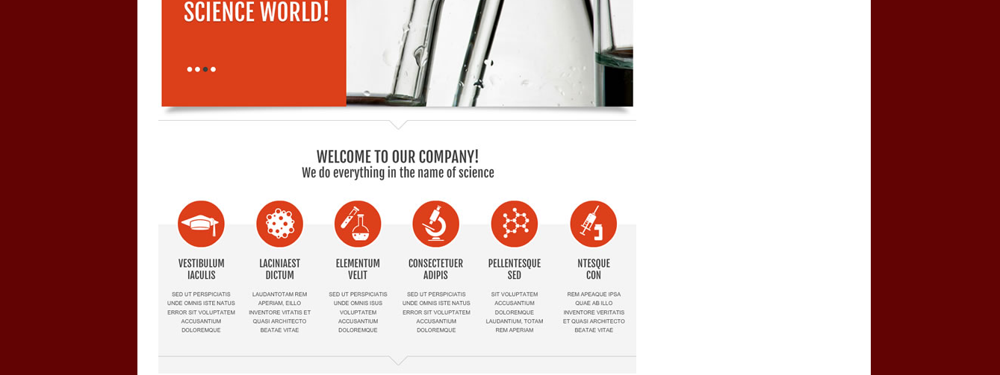
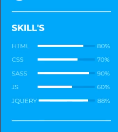
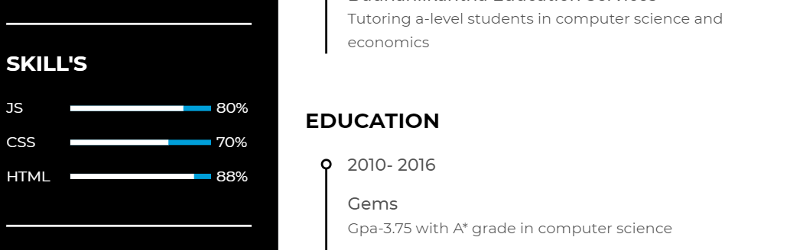

box one

taking reference from this contact page i was inspired to add the box-shadowing which made my form look more reponsive. the css property added here is box-shadow.
box two
i imported the icons from "fontawesome.com" to the files to display them. i was inspired from this site namely https://blog.entheosweb.com/ to add icons in my resume.
box three
 from the picture itself we can see that there is no such difference.i wanted to add a span to my website. although this had not been taught i learned something new. i added the span effect with css properties like width, span, display ,justify -content etc.
box four
i have drawn a simple navigation bar taking reference from this picture here where i added some hover and active effect to make my site interactive. i wanted a simple content rather than something extravagant so i didnt spend much time playing with the css here.
box five
i took reference from"https://webdesign.tutsplus.com/" to create flexbox in my research page , the css properties that assisted me with completing my flexboxare display -flex, order, width. flexbox avoidedmy site from looking convulated and tangled. i could arrange the research contents in order.